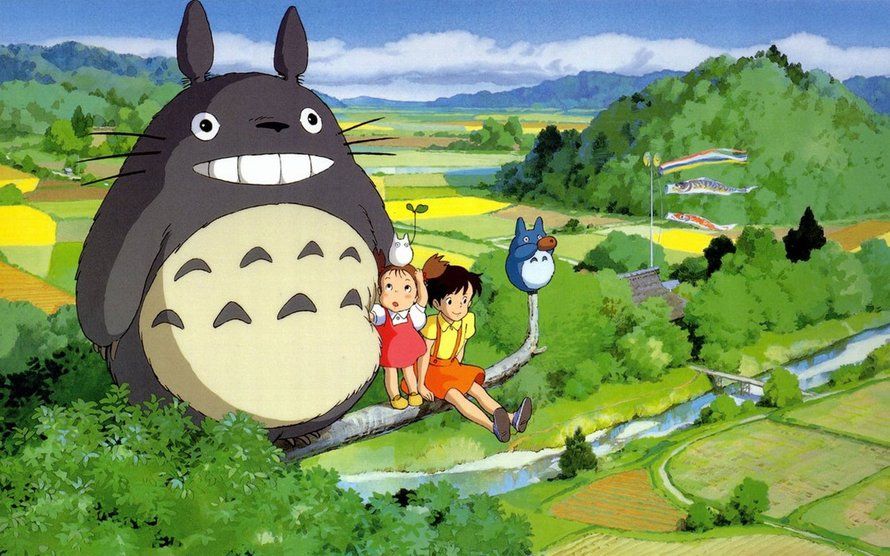

Over Totoro
Totoro is een groot vriendelijk vriendje gecreëerd door studio Ghibli (een Japanse animatiestudio). In Japan is Totoro een obake, hetgeen het best als monster vertaald wordt.
Totoro zijn eigenschappen
- Hij is groot
- Hij is vriendelijk
- Hij is lief
Totoro zijn vrienden
Totoro speelt een ocarina, kan vliegen op een soort tol, en heeft de magische gave om planten te laten groeien.
De kleine witte totoro kan onzichtbaar worden.